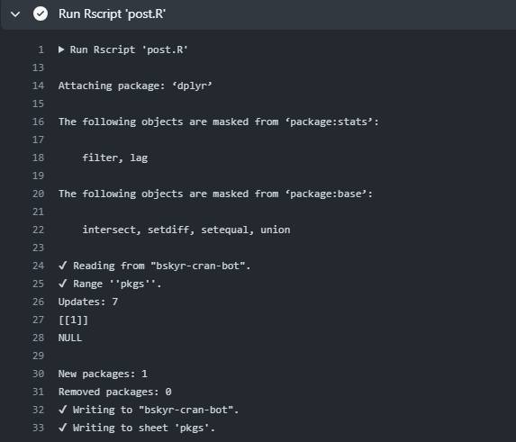

Making a Scheduled Bot for Bluesky Social in R
Explaining the mechanics behind my CRAN Updates bot for Bluesky Social.
![]()
This post walks through how I set up a simple bot in Bluesky Social. The bot, @cranupdates.bsky.social, posts every 2 hours with details about packages that have been updated, added, or removed from CRAN. Everything is run in R, primarily using the bskyr package. It’s run for free on GitHub Actions and data is stored between runs using Google Sheets.

The basic mechanics of the bot are:
- fetch currently available packages with
available.packages() - load the last run’s data from Google Sheets
- compare the two and identify changes
- make posts with
bs_post()for new packages, updated packages, and removed packages - save the current data to Google Sheets
This bot is entirely schedule based, so it doesn’t need to interact with other Bluesky users. Below, I detail how I set up the bot, including how to authenticate with Google Sheets (using googlesheets4) and GitHub Actions.
Setting up the bot
To set up the bot, we first need a public GitHub repo.1 For my CRAN Update bot, I placed it in christopherkenny/bskyr-cran-bot.
Now, the basic file structure of the repo looks like:
.
├── .github
│ └── workflows
│ └── post.yml
├── bskyr-cran-bot.Rproj
├── readme.md
├── inst
│ └── secret
│ └── bskyr-cran-bot.json
└── post.RThe .github folder contains the workflow file, post.yml, which tells GitHub Actions what to do and is discussed in Section 1.1. You don’t need a bskyr-cran-bot.Rproj or readme.md files, but they’re nice to have. The inst folder contains the secret folder, which contains the bskyr-cran-bot.json file, which is used to authenticate with Google and is discussed in Section 2. Finally, post.R is the script that does the work.
First, let’s explain post.R. I’m assuming that readers have some familiarity with R so will keep this brief. With that in mind, first bit of code loads libraries and authenticates the user (here GitHub Actions):
library(bskyr)
...
auth <- bs_auth(bs_get_user(), bs_get_pass())bs_get_user() and bs_get_pass() read from environmental variables. To set these, go to the repo’s “Settings” tab, then to “Secrets and variables” on the sidebar, and select “Actions”. Press the big green “New repository secret” button. We add two secrets: - BLUESKY_APP_PASS: the app password, created at https://bsky.app/settings/app-passwords - BLUESKY_APP_USER: your username
A discussion of authentication for Google is available in {#sec-auth}.
Next, we load the current data along with the last run’s data from Google Sheets.
# load available packages ----
pkgs <- available.packages(filters = c('CRAN', 'duplicates')) |>
as_tibble() |>
select(Package, Version)
# Run first time to create a spreadsheet
# gs4_auth()
# gs4_create(name = 'bskyr-cran-bot', sheets = list(pkgs = pkgs))
# get the old spreadsheet ----
old_pkgs <- read_sheet(ss = '135p8xqI3LGIyuvwSjav13tY10fRu8dUPFjVNVal18Tk', sheet = 'pkgs')Before making the bot live, I first created the spreadsheet, using the commented out code.2 This simplifies reading the data and updating it later, but may not be necessary for all bots of this type.
Next, we compare the two sets of data to identify changes.
# identify changes ----
updates <- setdiff(pkgs, old_pkgs)
new_pkgs <- updates |>
filter(!Package %in% old_pkgs$Package)
updates <- updates |>
filter(!Package %in% new_pkgs$Package)
removed <- setdiff(old_pkgs, pkgs) |>
filter(!Package %in% pkgs$Package)Each of these is then a tibble with 2 columns: Package and Version. - New packages are those which do not appear in the old data. These could have been archived before and may not be completely new. - Updated packages are those which appear in both data, but differ by version. - Removed packages are those which disappear in the new data, but were in the old dat.
Then, we make posts for new, updated, and removed packages. Th processes for updated and removed packages are identical, so I’ll go through posting about updates and new packages.
First, for updating (and removed) packages, let’s look at the whole snippet. This is only run if there are updates (or removed packages), so it’s wrapped in an if statement.
if (nrow(updates) > 0) {
update_txt <- vapply(seq_len(nrow(updates)), function(i) {
paste0(updates$Package[i], ' (', updates$Version[i], ')')
}, character(1))
n_char_update <- cumsum(nchar(update_txt))
if (max(n_char_update) > 260) {
# split into multiple posts
update_txt <- update_txt |>
split(cut(n_char_update, breaks = ceiling(max(n_char_update) / 260))) |>
lapply(paste0, collapse = ', ')
lapply(update_txt, function(txt) {
bskyr::bs_post(
text = paste0('Updates on CRAN: ', txt),
auth = auth
)
# avoid immediate new posts
Sys.sleep(3)
})
} else {
update_txt <- update_txt |>
paste0(collapse = ', ')
bskyr::bs_post(
text = paste0('Updates on CRAN: ', update_txt),
auth = auth
)
# avoid immediate new posts
Sys.sleep(3)
}
}
cat('Updates:', nrow(updates), '\n')For each pacakge update, we create a string with the package name and version.
update_txt <- vapply(seq_len(nrow(updates)), function(i) {
paste0(updates$Package[i], ' (', updates$Version[i], ')')
}, character(1))Then, we calculate the cumulative number of characters in each string.
n_char_update <- cumsum(nchar(update_txt))This is important, as posts are limited to 300 characters.
If we only have to make one call, we can collapse the text into a single character entry.
update_txt <- update_txt |>
paste0(collapse = ', ')Then we can just post it with one call to bs_post()
bskyr::bs_post(
text = paste0('Updates on CRAN: ', update_txt),
auth = auth
)We authenticated before, so we don’t need to do it again, we just have to pass auth = auth. For several posts in a session, this is better practice, as it avoids potentially dozens of extra calls to the API in a short period.
If it’s longer, we can split it like so:
update_txt <- update_txt |>
split(cut(n_char_update, breaks = ceiling(max(n_char_update) / 260))) |>
lapply(paste0, collapse = ', ')Then we loop over the elements of update_txt and post them.
lapply(update_txt, function(txt) {
bskyr::bs_post(
text = paste0('Updates on CRAN: ', txt),
auth = auth
)
# avoid immediate new posts
Sys.sleep(3)
})We also add a short sleep between calls, of 3 seconds. This isn’t necessary, but is a simple way to avoid spamming the API.
The last line of this snippet prints the updates to the console, so that we can see what’s happening.
cat('Updates:', nrow(updates), '\n')This makes it easier to debug, as statements printed will show up in GitHub Actions, like below:

Next, let’s look at the code for posting about new packages. This is slightly different, as we want to post about each package individually. Due to limits on the size of package names on CRAN, we then also know that we don’t need to check the character length of the post. For the i-th new package, it runs the following:
bskyr::bs_post(
text = paste0('New on CRAN: ', new_pkgs$Package[i], ' (', new_pkgs$Version[i], '). View at ',
'https://CRAN.R-project.org/package=', new_pkgs$Package[i]),
auth = auth
)This creates a link to the new package (say NEWPACKAGE) as https://CRAN.R-project.org/package=NEWPACKAGE on CRAN. bs_post() will automatically process this and create linked text in the post. bs_post() can handle other inputs, including images and alt-text. See the package reference for more details, including how to quote or reply to posts.
You might note that the posts above don’t contain any hashtags like #rstats. Bluesky feeds are a bit different from Twitter and frequently are built by watching keywords. If you are creating a bot that posts many times in a day, you may want to avoid using these in every post, as they can easily overwhlem these feeds. Instead, please use them sparingly, as anyone who wants to follow the bot can do so directly.
Before exiting, we want to update the spreadsheet, so that we can use it again in future runs. Since Google Sheets is our “database”, we can just use googlesheets4 to update it, just like how we read in the data.
# update the spreadsheet ----
write_sheet(pkgs, ss = '135p8xqI3LGIyuvwSjav13tY10fRu8dUPFjVNVal18Tk', sheet = 'pkgs')That handles the process of posting. Below, I detail scheduling this script to run automatically.
Scheduling the run
To schedule the run, we need to tell it a few things:
- when to run it
- what to run
- what environment variables it needs
- what R version to use
- what R packages to install
- what script to run
Below, I explain these steps. But first, the completed workflow looks like:
on:
push:
branches: main
schedule:
- cron: '0 1,5,9,13,17,21 * * *'
name: Post
jobs:
build-deploy:
runs-on: ubuntu-latest
env:
BLUESKY_APP_USER: ${{ secrets.BLUESKY_APP_USER }}
BLUESKY_APP_PASS: ${{ secrets.BLUESKY_APP_PASS }}
GARGLE_KEY: ${{ secrets.GARGLE_KEY }}
steps:
- name: Check out repository
uses: actions/checkout@v3
- uses: r-lib/actions/setup-r@v2
with:
r-version: 'release'
- uses: r-lib/actions/setup-r-dependencies@v2
with:
packages:
any::here
any::dplyr
any::stringr
any::googlesheets4
any::bskyr
- run: Rscript 'post.R'This whole file lives in .github/workflows/post.yml in the repo.
First, let’s break down the when part:
on:
push:
branches: main
schedule:
- cron: '0 1,5,9,13,17,21 * * *'This tells GitHub Actions to run the workflow when there’s a push to the main branch. It also says to schedule the workflow to run every 4 hours. CRON entries are minute hour day month weekday, so 0 1,5,9,13,17,21 * * * means to run at 1am, 5am, 9am, 1pm, 5pm, and 9pm every day. As implied, setting the star says to run it every day, every month, and every weekday. More documentation for the schedule part can be found here.
Then we give the job a name, “Post”, with name: Post.
The next section simply indicates we want the job to run on the latest version of Ubuntu:
jobs:
build-deploy:
runs-on: ubuntu-latestNext, we provide environment variables, that we set in the repo settings. See {#sec-auth} for an explanation of the env GARGLE_KEY variable. This step is like setting an .Rprofile file locally, but for GitHub Actions.
env:
BLUESKY_APP_USER: ${{ secrets.BLUESKY_APP_USER }}
BLUESKY_APP_PASS: ${{ secrets.BLUESKY_APP_PASS }}
GARGLE_KEY: ${{ secrets.GARGLE_KEY }}Now, we can give it the steps to use.
First, it needs to download the contents of the repo, so that it can access our post.R script.
steps:
- name: Check out repository
uses: actions/checkout@v3Then, we have to let it know to install R. We can use one of the r-lib/actions actions, setup-r@v2. I’m using the released R version (4.3.2) at the time of writing this. You could pin a specific version, but for bots, I plan to do the minor maintenance necessary as R versions increment.
- uses: r-lib/actions/setup-r@v2
with:
r-version: 'release'And then we list the packages we need. This uses the setup-r-dependencies@v2 action, again from r-lib/actions. Below, I make use of the prefixes: any:: and github::. any:: is used for packages on CRAN, generally, but will also run if you’ve installed it elsewhere through a prior dependency.
You can use github:: in place of any:: for packages on GitHub. You just need to specify the user and repo. So, if you want to use the dev version of a package, like bskyr, you could use the syntax: github::christopherkenny/bskyr.
- uses: r-lib/actions/setup-r-dependencies@v2
with:
packages:
any::here
any::dplyr
any::stringr
any::googlesheets4
any::bskyrIf you already use renv, you could instead use that with the setup-renv action.
Finally, we tell it to run post.R with:
- run: Rscript 'post.R'That’s sufficient to tell GitHub Actions everything it needs to know to run the bot. Below, I describe how to set up the authentication with Google Sheets. This is only necessary if you’re using it, like I am, to store data about the prior bot run.
Authenticating with Google for GitHub Actions
To authenticate with Google, we can use the gargle R package. gargle has a set of instructions for Non-interactive auth and for Managing tokens securely. These provide a much more detailed explanation of the process, but I explain the important parts for our use case below.
There are four steps here:
- Make a service account
- Share the Google Sheet with the service account
- Encrypt the service account key
- Share details with GitHub to decrypt the key
Make a service account
To make a service account, we start at the Google Cloud Console. We first need to make a project to hold the service account. We can do this by clicking the project dropdown in the top left and clicking “New Project”. Then, we can navigate to “Service Accounts” under “IAM & Admin” in the left sidebar. Click “Create Service Account” and give it a name. It doesn’t need any access to anything, so we can skip both “Grand this service account access to project” and “Grant users access to this service account”.
Once we’ve created the service account, we can click on it in the list of service accounts. Under keys, we can click “Add Key” and select “Create new key”. Select “JSON” as the type of key. This downloads a file that we need for the next steps.
Encrypt the service account key
Now, we need to encrypt the .json file we downloaded above. We can use the secret_encrypt_json() function from gargle to do this. First, we make our secret key to encrypt and decrypt with. We can run:
x <- gargle::secret_make_key()
Sys.setenv(GARGLE_KEY = x)This sets up the key in our environment, so we can use it in the next step.
Now, we can run secret_encrypt_json() to encrypt the .json file.
secret_encrypt_json('path/to/downloaded/key.json', 'where/to/save/it.json', key = 'GARGLE_KEY')For consistency with where the key gets saved in packages, I used inst/secret/bskyr-cran-bot.json as the path to save it. This file is encrpyted and needs to be pushed to GitHub.
At this point, we should take our script and run the first part locally to make sure the service account has proper permissions. We can run:
library(googlesheets4)
gs4_auth(path = gargle::secret_decrypt_json('inst/secret/bskyr-cran-bot.json', key = 'GARGLE_KEY'))This should prompt you to assign any permissions that it may need, primarily API access to Google Sheets. Once you’ve run that, wait 3-5 minutes. Then, you can rerun the gs4_auth() line and it should work without any new prompts.
Footnotes
You could use something more private, but for a generic bot, public means GitHub Actions is free and can get the job done.↩︎
This created a small issue in the bot: Several of the first set of posts were about new packages that weren’t actually new. This was because the first run of the bot was on a Windows laptop, while the second was on a Linux server. By default,
available.packages()returns packages available for the current OS, hence the setting offilters = c('CRAN', 'duplicates'), which overwrites the default that filters to OS-available too.↩︎
Citation
@online{t._kenny2024,
author = {T. Kenny, Christopher},
title = {Making a {Scheduled} {Bot} for {Bluesky} {Social} in {R}},
date = {2024-01-03},
url = {https://christophertkenny.com/posts/2024-01-03-bskyr-bot/},
langid = {en}
}